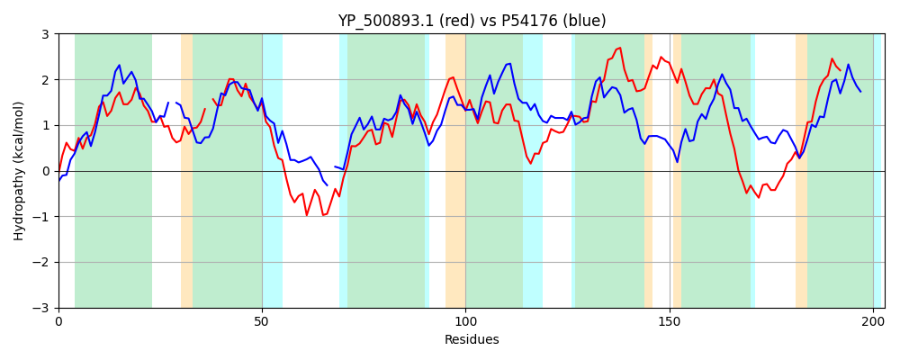

Hit Accession: P54176
Hit TCID: 1.C.113.1.1
Hit Description: gnl|BL_ORD_ID|10928 gnl|TC-DB|P54176|1.C.113.1.1 HEMOLYSIN III (HLY-III) - Bacillus cereus.
Mach Len: 203
e:0.000000
Query TMS Count : 7
Hit TMS Count: 7
TMS-Overlap Score: 6.400000
Predicted Substrates:CHEBI:25367;molecule
BLAST Alignment:
Score: 362 , Bit scores: 144 bits, E-value: 5.9e-43, Alignment length: 203, Percentage identity: 33
Query: 26 EEIGNAASHGVAALLTLLVLPYAAVHSYIAHGTLASV-SMSIYVISIFMMFISSTIYHSMQNETPHKYILRIIDHSMIYVAISGTYTPILLTVVGGWIGWTVFILLWGTTLWGILYKSIAVKVNQKLSLIVYLVMGWVGIILLPIIFIRTSWIFILFIFLGGVSYTIGAWFYAQKNRPYFHMIWHIFIVIASLLHLIAILYFM 227
EEI NA +HG+ A+L++ L +H+ HGT ++V + ++Y +S+F++++ ST+ HS+ + K + I+DHS IY+ I+GTYTP LL + G +GWT+ ++W + GI++K V+ K S + Y++MGW+ I+ + ++ + + GG+ Y++GA F+ + P+ H IWH+F++ S + +L+++
Sbjct: 14 EEIANAITHGIGAILSIPALIILIIHAS-KHGTASAVVAFTVYGVSMFLLYLFSTLLHSIHHPKVEK-LFTILDHSAIYLLIAGTYTPFLLITLRGPLGWTLLAIIWTLAIGGIIFKIFFVRRFIKASTLCYIIMGWLIIVAIKPLYENLTGHGFSLLLAGGILYSVGAIFFLWEKLPFNHAIWHLFVLGGSAMMFFCVLFYV 214 | Protein Hydropathy Plots: |
|---|
| |
Pairwise Alignment-Hydropathy Plot:
|
|---|
|  |